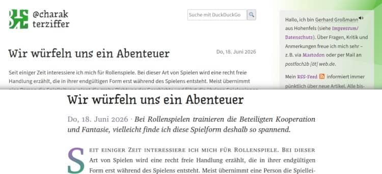
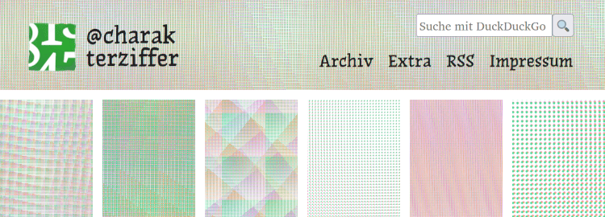

Manches soll nicht gleich in der Timeline versinken …
Auf dieser Website ist Platz für alles, wofür mein Mastodon-Account @charakterziffer zu kurzlebig ist. Dieses Blog ist als Plus zu meinen Posts gedacht, eben „@cz+“. // Meine letzten drei Artikel:
Dank neuem Design sieht hier alles etwas anders aus … Was genau sich verändert hat, welche Gedanken dahinter stecken und woher die Inspiration kam.
Genau wie der Jahreswechsel ist auch der August bei mir etwas ruhiger, ich habe kaum Termine und weniger Verpflichtungen. In den Ferien ist Zeit für größere Projekte, zum Beispiel für Ausflüge, für ein Computer-Update, um Neues zu lernen – oder um meinem kleinen Blog nach neun Jahren ein frisches Design zu spendieren.
Zwar hatte ich noch vor zwei Jahren über humanistische Sans-Schriften als Fontstack nachgedacht, bin nun aber doch von der Source Sans Pro weg, die ich ganz zu Beginn meines Blogs als Textschrift gewählt habe. Und an dem grünen Randstreifen mit dem kristallinen Muster von April 2017 hatte ich mich langsam sattgesehen:
Ich wollte meine Blogposts etwas gediegener und ruhiger präsentieren; weniger wie „halt so ein Internettext“, sondern etwas klassischer, ähnlich einem gedruckten Artikel. Darum habe ich mich für die Serifenschrift Charis entschieden und verwende sogar Blocksatz, wie in literarischen Büchern üblich (nicht bei schmalem Browserfenster). Damit es nicht zu altbacken und ein bisschen individueller wird, beginne ich meine Artikel mit einem kursiven Vorspann und setze im Absatz danach ein großes Initial, das zum Lesen einladen soll – wie in einem Magazin.
Bereits bei der vorigen Neugestaltung habe ich überlegt, ob ich die Randspalte weglassen soll. Nun ist der verbliebene graue Kasten ganz verschwunden und nach unten in den Seitenfuß gewandert.
Wie 2017 habe ich auch diesmal den Text leicht vergrößert. In breiten Browserfenstern erhöht sich meine Textgröße von 1,1 auf 1,15 em (also von rund 17,6 auf 18,4 px). Entsprechend habe die Textspalte noch ein wenig breiter gemacht. Vermutlich werde ich langsam alt und Websites mit winziger Schrift nerven mich zunehmend.

Meine selbstgestaltete Schrift czSlab habe ich beibehalten und nutze sie wie zuvor für Überschriften, fette Hervorhebungen, Links und im Kontaktformular. Auch das Logo habe ich unverändert gelassen, obwohl ich die Farben der Website generell ein wenig in die bläuliche Richtung gedreht habe.
Technisch gesehen verwende ich in der Stylesheet-Sprache CSS einige Neuerungen, die vor neun Jahren nicht vorhanden oder kaum verbreitet waren. Mit clamp() passe ich die Schriftgröße stufenlos an die Fenstergröße an, durch ::first-letter gestalte ich das Initial am Textbeginn und gebe ihn mit background-clip einen gepunkteten Farbverlauf. Dank ::first-line kann ich die erste Textzeile in Kapitälchen setzen und mit der Einheit rlh (root line height) richte ich alle Elemente am Grundlinienraster aus. Schön, dass sich die Technik weiterentwickelt und ich das praktisch anwenden kann.
Farbfläche mit Schimmer-Effekt
In der Hoffnung, dass ich mein Smartphone eher aus der Hand lege, habe ich dort abends einen Filter aktiviert, der das Display auf Graustufen schaltet. Das hat sicher dazu beigetragen, mich stärker auf Muster und Strukturen zu konzentrieren.
Für mein Blog wollte ich etwas Schimmerndes, Changierendes, Irisierendes – etwas wie Perlmutt, Flip-Flop-Lacke bei Autos oder weiße Opale. Technisch ist das auf einem Bildschirm aber nicht zu machen, also habe ich überlegt, wie ich etwas Vergleichbares imitieren könnte. Als Inspiration habe ich mir allerhand Bilder von feinen Schraffuren gespeichert, von Guillochen, Polarlichtern, Druckrastern und Moiré-Effekten.
Herausgekommen ist schließlich die Idee, drei feine Punkteraster in leuchtenden Farben übereinanderzulegen. Die Farben sind so aufeinander abgestimmt, dass sich insgesamt ein eher grauer Eindruck ergibt. Durch die Verschiebung der Raster schimmert stellenweise immer eine andere Farbe hervor und es ergeben sich gitterförmige oder wolkenartige Strukturen.

Ein schöner Effekt, den ich in der oberen Leiste meines Blogs anwende. Darum sieht der obere Rand immer wieder anders aus, abhängig vom Browser, von der Fenstergröße und der Vergrößerungsstufe. Wer damit ein wenig spielen möchte, für den habe ich das Opal-Muster auf einer Extra-Seite großflächig abgebildet.
Punkteraster als Prinzip
Die Idee des Punkterasters mit verlaufenden, eher gedeckten Farben habe ich dann zur grafischen Grundlage des neuen Blogdesigns bestimmt. Ich lasse das an mehreren Stellen wieder auftauchen, zum Beispiel beim großen Buchstaben am Textanfang, unten in der grauen Fußleiste oder für Hervorhebungen wie die folgende:
Texte über einem Hintergrundmuster sind schlechter lesbar als mit blassem einfarbigen Hintergrund. Das nehme ich hier in Kauf und hoffe, dass das schwache Punktemuster in diesen seltenen Fall funktioniert.
Farblich ist mein Blog nun also ein bisschen gedeckter als zuvor, dafür besitzt es einige neue Elemente, die man mit böser Zunge als „rein dekorativ“ bemängeln könnte (z. B. den Vorspann, das Initial, das Punkteraster). Mal sehen, ob mir mein viertes Blogdesign auch fast ein Jahrzehnt lang gefällt …
Ach ja: Bei der Umgestaltung habe ich viele Details in früheren Artikeln angepasst (z. B. Farbvariablen, Abstände oder Textanfänge). Wahrscheinlich habe ich nicht alles gefunden und es gibt Stellen, die irgendwie falsch aussehen. Falls ihr so einen Fehler findet, schickt mir bitte eine kurze Nachricht, dann kann ich das reparieren. Und nun viel Spaß mit meinem neugestalteten Blog! 🥳
Zweimal im Jahr gibt’s eine Sonnenfinsternis – doch wenn man ihr nicht hinterherreist, sieht man eine ordentliche Finsternis eher selten.
Nächsten Mittwoch (12. August) ist es mal wieder soweit: Der Mond zieht so zwischen Sonne und Erde hindurch, dass er auf die Erdoberfläche einen Schatten wirft. Von der Erde aus gesehen schiebt sich ein schwarzer Kreis über die Sonnenscheibe und verdeckt diese (je nach Standort) teilweise oder sogar vollständig – eine Sonnenfinsternis.
Etwa alle 29 Tagen hat der Mond die Erde einmal umrundet und zieht an der Sonne vorbei. Er wird dann von hinten beleuchtet und ist als Neumond von der Erde aus nicht zu sehen. Warum gibt es dann nicht jeden Monat eine Sonnenfinsternis? Das liegt daran, dass die Bahn des Mondes gegen die scheinbare Sonnenbahn („Ekliptik“) um etwa 5° geneigt ist. Es gibt also nur zwei Punkte, wo sich Mondbahn und „Sonnenbahn“ schneiden – die sogenannten Mondknoten oder Drachenpunkte. In allen anderen Fällen zieht der Neumond oberhalb oder unterhalb der Sonne vorbei. Darum gibt es etwa zwei Sonnenfinsternisse im Jahr.
Zweimal im Jahr – so oft?
Moment, zwei Sonnenfinsternisse jährlich? Sind die nicht viel seltener? – Nee, partielle Sonnenfinsternisse, wo der Mond die Sonne teilweise bedeckt, können sogar bis zu fünfmal in einem Jahr auftreten.
Seltener sind totale Sonnenfinsternisse, dazu braucht es neben der richtigen Mondstellung auch noch den perfekten Abstand. Unser Mond ist mal mehr, mal weniger weit von der Erde entfernt. Manchmal ist er mit etwa 382.800 km recht nah, manchmal fast 383.400 km von uns weg. Steht der Mond weiter entfernt, dann wirkt er von der Erde aus kleiner und schafft es nicht, die Sonne bei einer Finsternis vollständig zu verdecken. Ein Ring bleibt sichtbar. Die Chance auf eine totale Sonnenfinsternis gibt es nur etwa alle 18 Monate.
Alle anderthalb Jahre eine totale Sonnenfinsternis? Wirklich so oft? – Ja, nun … eigentlich schon. Aber eben nicht überall. Sichtbar ist die totale Sonnenfinsternis nur im Kernschatten, wo der Mond die Sonne vollständig bedeckt. Dieser Schatten ist maximal 270 km breit und rast in einem Streifen von einigen Tausend Kilometern Länge über den Globus (Quelle). Eine Finsternis an einem bestimmten Ort dauert dann zwischen einer und sieben Minuten.
Weil nur ein verhältnismäßig kleines Gebiet vom Kernschatten überstrichen wird, kann man eine totale Sonnenfinsternis an seinem Wohnort wirklich selten beobachten. Die Website Time and Date bietet eine tolle Karte, wo die nächsten Sonnenfinsternisse zu sehen sind.
Was sieht man am 12. August 2026?
Bei uns in Deutschland ist die Sonne zwischen 85 und 90% bedeckt, das entspricht einer recht schmalen Sichel und bringt eine merkliche Verfinsterung. Ich erwarte, dass es nicht so ungewöhnlich erscheint, weil das Maximum bei uns kurz nach 20 Uhr auftritt, also nicht lang vor Sonnenuntergang – und da wird es ja normalerweise eh dunkler. Als Beobachtungspunkt empfiehlt sich ein Ort, wo man zum Sonnenuntergang den Westhorizont gut sehen kann. Beginn der Finsternis ist kurz nach 19 Uhr (der Mondkreis berührt die Sonnenscheibe), das Ende der Finsternis ist erst erreicht, wenn die Sonne bei uns schon untergegangen ist.
Weil vom Sonnenlicht immer noch mindestens 10% zu sehen bleiben, sollte man auf keinen Fall direkt in die Sonne blicken – Erblindungsgefahr! Entweder, man besorgt sich eine Sonnenfinsternisbrille (ca. 3–5 Euro bei Optikern, Sternwarten, evtl. Apotheken, etc.) oder kann die Sonne indirekt beobachten (Karton mit winzigem Loch vor ein weißes Papier halten → die Sonnensichel wird sichtbar). Auch 3–4 Schichten einer Rettungsdecke (gold-silber aus dem Verbandskasten) sind möglich (Quelle, hier bekräftigt (ab Min. 4’45”)).
Smartphones sollte man nicht zur Beobachtung verwenden. Erstens kann das Sonnenlicht den Bildsensor beschädigen und zweitens neigt man dazu, am Smartphone immer wieder kurz vorbei direkt in die Sonne zu gucken.
Zwei Wochen später: Mondfinsternis
Am Freitag, den 28. August, läuft der Vollmond auf seiner Bahn genau gegenüber durch den anderen Mondkonten – darum gibt es noch eine Finsternis. Dann tritt der Mond in den Erdschatten, es gibt eine (partielle) Mondfinsternis, siehe mein Blogartikel von 2015. Gegen halb vier Uhr früh geht’s los, etwa um 6:15 Uhr ist das Maximum und der Mond erscheint rötlich.
Schreibt als Kommentar gern, wie ihr die Sonnenfinsternis verfolgen werdet oder hinterher, was euch dabei aufgefallen ist: Haben sich Tiere anders verhalten? Wurde es kühler? Habt ihr sichelförmige Sonnentaler gesehen? Viel Spaß beim Beobachten!
Meinen Alltagsfüller betanke ich abwechselnd mit einer von derzeit neun Tinten. Hier stelle ich meine verschiedenen Farben kurz vor.
Vor zehn Jahren habe ich einen Blogartikel über meine farbigen Tinten geschrieben – nun möchte ich das wiederholen. Noch immer nutze ich den gleichen Füller Kaweco Special, habe mir aber einen neuen Konverter gekauft.
Bis letztes Jahr hatte ich als weiteres Schreibgerät einen einfachen Rollerpen im Einsatz, so dass ich parallel immer zwei verschiedene Tinten kombinieren konnte. Seit dem Umzug nach Hohenfels habe ich nämlich ein extra Büro und der Füller lag meistens im Wohnzimmer. Jetzt wechsle ich weniger hin und her und komme wieder mit einem Schreibgerät aus.
Trotz Tinten-Einkaufsstopp besitze ich inzwischen neun statt sieben Farben 🤷. Seit zwei Jahren wechsle ich nicht mehr in einer festgelegten Reihenfolge durch, sondern gehe ein bisschen danach, worauf ich gerade Lust habe, was harmonisch zur vorangehenden Farbe passt, was ich schon länger nicht mehr verwendet habe und wovon noch das meiste da ist. Hier meine aktuelle Tintensammlung:
Mahatma Gandhi – Eine sehr leuchtende, safranfarbene Tinte von Montblanc. Ich habe sie im länglichen Tintenfass mit 60 ml geschenkt bekommen – entsprechend lange hält sie bei mir, ist mittlerweile meine älteste Tinte und war bereits 2016 in meiner Sammlung.
Shikiori Yodaki – Von dieser roten Tinte des Herstellers Sailor hat mir ein Freund letztes Jahr zwei 20 ml-Fläschchen aus Japan mitgebracht. In einer Tinten-Bewertung hat mich der goldene Glanz neugierig gemacht – man sieht ihn allerdings nur auf sehr glattem Papier, wenn die Tinte an der Oberfläche trocknet und kaum ins Papier einziehen kann.
Magenta – Eine unangemessen günstige Tinte von Rohrer & Klingner, die frisch geschrieben ein bisschen rötlicher erscheint, angetrocknet dann ein bisschen bläulicher.
Lie de Thé – Mit feiner Feder geschrieben wirkt dieser Braunton von J. Herbin etwas dunkler und ist für mich eine schöne Alternative zu klassischen blauen Tinten. Wird der Schreibstrich dicker, kommt die Tinte etwas heller rüber und wird mir persönlich ein bisschen zu gelb.
Cacao du Brésil – Ein weiterer Braunton von J. Herbin, allerdings deutlich grauer, von dem ich mir nur ein kleines Fläschchen (10 ml) gekauft habe. Es wird demnächst leer und obwohl ich ja eher neue Farbtöne ausprobieren möchte, könnte es sein, dass ich mir genau diese Tinte wieder nachkaufe.
Jonathan Swift – Das Seetanggrün von Montblanc habe ich auch bereits seit über 10 Jahren in Gebrauch, das runde 35 ml-Fässchen dürfte aber bald aufgebraucht sein. Besonders gut gefällt mir an dieser Tinte die Schattierung, also dass sie beim Schreiben hellere und dunklere Grüntöne zeigt.
Moctezuma I – Für diese türkisfarbene Tinte hat sich der Hersteller Montblanc die begleitende Farbbezeichnung Pierced Sky ausgedacht, was man vielleicht mit „durchstochener Himmel“ übersetzen könnte. Sehr schön finde ich, wie der Farbton zwischen grün und blau schwankt, abhängig vom Licht und dem Papier.
Vert de Gris – Eine gedämpfter Blauton von J. Herbin, nicht so stechend wie das weitverbreitete Königsblau. Wie bei Cacao besitze ich hiervon nur ein nur ein 10 ml-Fläschchen und versuche mir die Tinte etwas einzuteilen.
Blue Blood – Diese Tinte von Vinta Ink wird auf den Philippinen hergestellt und ich bin hin und her gerissen. Ausgewählt habe ich sie, weil sie einen massiven, pinkfarbenen Glanz besitzt, sie reflektiert sogar auf normalem Schreibpapier metallisch, wenn man das Geschriebene schräg ins Licht hält. Das sieht einfach sehr krass aus und ist ein beeindruckender Effekt. Es hat aber seinen Preis: Die Tinte trocknet schnell ein und fließt schlecht aus dem Füller. Ich muss die Feder oft erst in Wasser tauchen, bevor der Fluss in Gang kommt. Außerdem ist das Geschriebene sehr wasserlöslich und verschmiert sogar noch nach Tagen. Ob es das wert ist?
Das sind meine aktuellen neun Tinten. In welcher Farbe bekommt ihr am liebsten handgeschriebene Briefe? Gibt es Schreibfarben, die ihr sehr mögt oder für absolut ungeeignet haltet? Wie sind eure Erfahrungen mit besonderen Effekt-Tinten?
Das Wort kombiniert Persönlichkeit (Charakter) mit Sachlichem (Ziffer). Zusammengesetzt ergibt sich ein Synonym für Mediävalziffer, eine Zahlenvariante mit Ober- und Unterlängen.
Schriftarten dieses Blogs
Wenn dein Browser eingebettete Schriften (WOFF2) unterstützt, dann liest du die Fließtexte hier in der Charis, erstmals erschienen 1997 bei SIL Global und basierend auf der Bitstream Charter von Matthew Carter.
Die Überschriften sind aus der czSlab gesetzt, die ich 2017 für dieses Blog gestaltet habe. Sie ist inspiriert von Yanones viel ausgefeilterer Antithesis von 2014.
§ 1 Externe Links · Dieses Blog verlinkt auf Websites Dritter. Zum Zeitpunkt der erstmaligen Verlinkung waren dort keine Rechtsverstöße ersichtlich. Da ich keinen Einfluss auf fremde Websites habe, kann ich für deren Inhalte und Gestaltung keine Haftung übernehmen. Sollte ich von Rechtsverstößen erfahren, entferne ich die Verlinkung unverzüglich. Eine ständige Kontrolle der externen Links ist ohne konkrete Hinweise aber nicht zumutbar.
§ 2 Datenschutzerklärung · Mir ist der Schutz deiner Daten sehr wichtig. Deshalb verzichte ich auf Cookies, vermeide möglichst Dienste von Drittanbietern und erhebe so wenige Daten wie es geht. Diese Website kann ohne die Angabe persönlicher Daten genutzt werden.
Die einzige Ausnahme sind Kommentare. Wenn du einen meiner Texte kommentierst, bekomme ich die eingegebenen Daten und eine Zeitangabe per (prinzipiell unsicherer) E-Mail zugestellt. Falls dein Kommentar sachlich zur Diskussion beiträgt, ergänze ich ihn öffentlich sichtbar unter dem entsprechenden Artikel. Dabei sind sämtliche Angaben freiwillig (Name, Website, Mailadresse, Kommentar) – auch anonyme Kommentare sind möglich.
§ 3 Widerspruch gegen Direktwerbung · Die Verwendung meiner Kontaktdaten zur gewerblichen Werbung ist ausdrücklich nicht erwünscht; ich widerspreche hiermit jeder kommerziellen Nutzung und Weitergabe meiner Daten (gemäß § 21 DSGVO). // Über private Fanpost freue ich mich allerdings sehr und antworte darauf mit großem Vergnügen!
 @charak
@charak


{kind=link}
{kind=link}
{kind=link}
{kind=link}
{kind=link}
{kind=link}
{kind=link}
{kind=link}